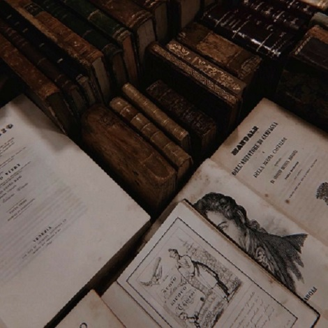

Seja bem-vindo a uma página onde priorizamos a literatura e tentamos incentivar os joves a continuar o
hábito de leitura, já que sabemos que as telas tem dominado e não abrem espaço para hábitos que podem ser
muito mais saudáveis. Claro que muitos leitores hoje em dia estejam trocando os livros físicos pelos
digitais, mas mesmo assim, continua sendo uma forma de leitura. Esperamos que goste do site! Se sinta a
vontade.
Publicações Recentes
Livro novo na área
Uma nova notícia que com certeza aquece o coração dos leitores é o lançamento de um livro novo, ou uma
continuação. Principalmente aquelas que prometem muito. Então a ilustrissíma autora de 'É assim que
começa' publicou sua continuação, que foi nomeada de "É assim que começa". O livro agora trará uma
narrativa vinda da visão do Atlas. Que, para aqueles que não se lembram, é o mendigo que possui um glow
up que muitos invejam, e que mora em nossos corações. A autora agradece a toda a repercursão do primeiro livro, principalmente a toda a comunidade do Tik Tok, que atraiu uma nova onda de leitores para o livro.
Novo Artigo sobre a História dos Livros

Foi publicado recentemente um novo artigo com envolvimento na história dos livros, dessa vez temos o Poder dos Livros. No artigo podemos encontrar alguns dos benefícios que os livros trazem, além de trazer algumas especificações e explicações. A equipe de redatores espera que vocês gostem.